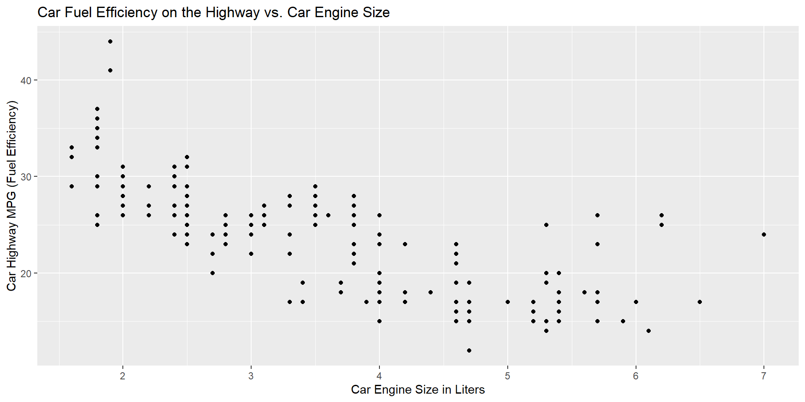

# A tibble: 6 × 11
manufacturer model displ year cyl trans drv cty hwy fl class
<chr> <chr> <dbl> <int> <int> <chr> <chr> <int> <int> <chr> <chr>
1 audi a4 1.8 1999 4 auto(l5) f 18 29 p compa…
2 audi a4 1.8 1999 4 manual(m5) f 21 29 p compa…
3 audi a4 2 2008 4 manual(m6) f 20 31 p compa…
4 audi a4 2 2008 4 auto(av) f 21 30 p compa…
5 audi a4 2.8 1999 6 auto(l5) f 16 26 p compa…
6 audi a4 2.8 1999 6 manual(m5) f 18 26 p compa…Computing for the Social Sciences: Lecture 3
Topics: Intro to ggplot2; Coding Style
Author
Sabrina Nardin, Fall 2026
Agenda
- Motivation: Why We Visualize Data
- The Grammar of Graphics and ggplot2 & Coding Style
- Simplifying ggplot2 Code with Defaults
- Practice: Gapminder Data
Slides last updated on October 05, 2026. Slides authored by Sabrina Nardin. AI used to polish slides style and fix typos.
1. Motivation: Why We Visualize Data
Why We Visualize Data
- Graphs help us identify patterns
- Graphs make data more understandable
- Graphs allow us to explore questions quickly (initial viz → data/models → more viz)
Example: mpg dataset
Imagine you are a data analyst for a car company, and have information on ~200 cars.
Paste this code into your R Console and run it to see the mpg dataset (use the most recent R version on Workbench):
Reminders:
- Note
library(ggplot2)loads the package in our current R session: What’s a package? What’s the difference between loading and installing a package? - Check your R version on Workbench and use the most recent for data viz
- Check your working directory on Workbench (“Project:”) and switch project as needed
Example: mpg dataset
Key Dataset Terms
The mpg dataset has 234 observations (cars, in rows) and 11 variables (properties, in columns)
- Observations
- Variables
hwyfuel efficiency on the highway, in miles per gallon
displengine size or displacement, in liters
classtype of car (compact, SUV…)- etc.
Our First Plot
Imagine you pick two variables from this car dataset:
hwycar fuel efficiency on the highway (in miles per gallon)displcar engine size or displacement (in liters)
You want to visually inspect their relationship, so you start by creating a simple scatter plot…
Our First Plot

- What’s on the x-axis? And on the y -axis?
- What does each dot in this scatterplot represent?
- You want a car that combines high fuel efficiency on the highway and a large engine size. Can you find one?
- Do larger engines tend to have higher or lower highway fuel efficiency?
Code for our First Plot with ggplot2
library(ggplot2)
ggplot(data = mpg) +
geom_point(aes(x = displ, y = hwy)) +
labs(title = "Car Fuel Efficiency on the Highway vs. Car Engine Size",
x = "Car Engine Size in Liters",
y = "Car Highway MPG (Fuel Efficiency)")Copy the code into Workbench and run it one piece at a time to see how the plot builds.
💻 Practice
Below is a slight variation of the previous code:
Team up with someone, run the code, and answer these questions:
- What do you see? How is this new plot different from the original one?
- What do the first two lines of code do?
- What does
aes()do? Andcolor = class? - Replace the aesthetic
colorwithshapeand re-run the code. What happens? - Check the documentation for
geom_point()to learn about its aesthetics
2. The Grammar of Graphics and ggplot2
Grammar of Graphics and ggplot2
We’ve been creating our first plot intuitively. Let’s formally introduce key concepts:
ggplot2is the main R package used for data visualization https://ggplot2.tidyverse.org/- It’s part of the
tidyverse, a collection of packages for data analysis: https://www.tidyverse.org/ - Created by Hadley Wickham, who also co-authored this course textbook
- Built using the theory called the Grammar of Graphics, a system for creating layered plots (see https://www.tandfonline.com/doi/pdf/10.1198/jcgs.2009.07098 for an intro to this theory)
Grammar and “Grammar of Graphics”
A grammar is a set of rules for combining words (syntax, morphology, etc.), that helps us structure a language and communicate clearly.
Applied to R and ggplot2…
A Grammar of Graphics is a set of rules for combining visual elements (data, aesthetics, geometries, etc.) that helps us structure plots and communicate clearly.
Main Components of the Grammar of Graphics
In ggplot2, a plot is made up of layers. Each layer combines several components that describe what to draw and how to draw it.
The five main components are:
- DATA: the dataset you are using (e.g. mpg data)
- GEOM: the type of plot (e.g., points, bars, lines)
- MAPPING: maps variables to aesthetics like x, y, color, etc.
- STAT: whether the data should be transformed (e.g., counted) or not (e.g., identity)
- POSITION: how things are arranged on the plot (e.g., stacked or jittered)
Grammar of Graphics: Code Template
Let’s look at how these five main components show up in ggplot2 code:
# code template
ggplot(data = <DATA>) +
<GEOM>(
mapping = aes(<MAPPING>),
stat = <STAT>,
position = <POSITION>
)At the plot level, you can also add more components, like:
Grammar of Graphics: Code Template with the mpg Dataset
Now, fill this code template using the mpg data and plot it:
Before we dive into these five components of a ggplot
Let’s pause and review two things that you will use throughout:
- Making a plot vs. storing a plot
- Good coding style in
ggplot2and R
Make and Store a Plot
First example: makes and displays the plot, but does not store it.
Second example: makes and stores the plot into an object, fuel_plot. To display it, call the object.
fuel_plot <- ggplot(data = mpg) +
geom_point(
mapping = aes(x = displ, y = hwy, color = class))
fuel_plotOn Coding Style in R
💻 Practice
Here’s the same code from the previous slide. This time focus on its style (parentheses, operators, spacing, indentation, variable names, etc.)
What do you notice?
fuel_plot <- ggplot(data = mpg) +
geom_point(
mapping = aes(
x = displ,
y = hwy,
color = class # map color to the variable class
)
)
fuel_plotCoding Style Checklist
- Use
<-to assign values to variables - Use
=to assign values to function arguments - Use descriptive, meaningful variable names (
snake_case, lowercase) - Add spaces around operators (e.g.,
+,-,<-) for readability - Avoid spaces inside parentheses or brackets
- Close every opened parenthesis
- Break long lines and use indentation
- Use comments, do not abuse them
Coding Style Resources
Resources:
Back to the Grammar of Graphics
We have seen that a ggplot is built from several components:
- Each layer can include: data, mapping, geom, stat, and position
- The overall plot can also include: scales, a coordinate system, facets, and a theme
Note
💡 The following slides focus on the most common parts you’ll use and are worth remembering! This isn’t the full picture: you’ll learn more as you experiment and build more plots. See today’s readings for a broader overview.
Pick the Right Geometric Object
GEOMETRY (geom): is the type of plot you make, which depends on your variables type. Most common:
geom_point()→ scatterplotgeom_line()→ line chartgeom_bar()→ bar chartgeom_histogram()→ histogramgeom_boxplot()→ boxplot
Each geom accepts certain aesthetics. How do you know which ones? Read the documentation, for example geom_point reference
Statistical Transformation
STATISTICAL TRANSFORMATION (stat): transforms your data before plotting, depending on the geometric object you are using (e.g., the type of graph).
Here is the code from before:
fuel_plot <- ggplot(data = mpg) +
geom_point(
mapping = aes(x = displ, y = hwy, color = class),
stat = "identity",
position = "identity"
) +
coord_cartesian() +
facet_wrap(vars(class), nrow = 1)
fuel_plotStatistical Transformation
STATISTICAL TRANSFORMATION (stat): transforms your data before plotting, depending on the geometric object you are using (e.g., the type of graph).
For example geom_point() uses stat = "identity" by default, like this:
While geom_bar() uses stat = "count" by default, like this:
Aesthetics Mapping
AESTHETIC MAPPING (aes): defines how variables are mapped to visual properties of a plot (e.g., x, y, color, size, shape).
Important
When using color small mistakes can make the difference! Let’s practice…
💻 Practice: Using Color Correctly with Mapping Aesthetics
Which of these three code blocks is correct? Run and compare them in R.
💻 Practice: Using Color Correctly with Mapping Aesthetics
Mapping vs Setting in ggplot2
Mapping means linking a variable from your data to a visual property inside
aes()
Example:aes(color = class)→ color depends on the variableclassSetting means assigning one fixed value outside
aes()
Example:color = "blue"→ all points are blue
Adding Titles, Labels, and Captions
To add text elements to your plot, use labs():
ggplot(data = mpg, aes(x = displ, y = hwy, color = class)) +
geom_point() +
labs(
title = "Car Fuel Efficiency on the Highway vs. Car Engine Size",
subtitle = "Colored by car type",
x = "Car Engine Size in Liters",
y = "Car Highway MPG (Fuel Efficiency)",
caption = "Data: mpg dataset (n = 234)")For more control, combine it with theme():
ggplot(data = mpg, aes(x = displ, y = hwy, color = class)) +
geom_point() +
labs(
title = "Car Fuel Efficiency on the Highway vs. Car Engine Size",
subtitle = "Colored by car type",
x = "Car Engine Size in Liters",
y = "Car Highway MPG (Fuel Efficiency)",
caption = "Data: mpg dataset (n = 234)") +
theme(plot.title = element_text(face = "bold", size = 18))Layers can Overlap
Layers create the visual elements on a plot. Each layer adds something new to the visualization and can inherit components as shown below:
3. Simplifying ggplot2 with Defaults
Example 1
Example from the previous slide
Long version:
ggplot(data = mpg) +
geom_point(
mapping = aes(x = displ, y = hwy, color = class),
stat = "identity",
position = "identity") +
geom_smooth(
mapping = aes(x = displ, y = hwy),
method = "lm")Short version:
Example 2
Scatterplot between cars’ engine size (displ) and highway fuel efficiency (hwy)
Long version:
ggplot() +
layer(
data = mpg,
mapping = aes(x = displ, y = hwy),
geom = "point",
stat = "identity",
position = "identity"
) +
coord_cartesian()Quick Review
- What does
geom_point()do? - What does
stat = "identity"mean? - When would you use
facet_wrap()? - What’s wrong with
aes(color = "blue")? - What does it mean that layers can inherit elements?
Try answering these without peeking at the slides!
4. Pratice: Gapminder Data
💻 Practice: Gapminder
Download today’s in-class materials from the website!
The gapminder dataset:
- Data on various socio-economic indicators (e.g., life expectancy, GDP per capita, and population) for countries around the world over multiple years (1957-2008)
- https://cran.r-project.org/web/packages/gapminder/readme/README.html
- https://www.gapminder.org/
Recap: What We Learned Today
- Core components of the Grammar of Graphics
- Generate simple graphs with ggplot2
- Use the Grammar of Graphics template and simplify it with defaults
- R Coding Style Best Practices
To print these slides as pdf
Click on the icon bottom-right corner > Tools > PDF Export Mode > Print as a Pdf